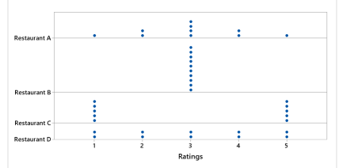
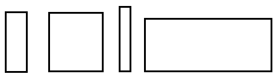

1.4 Measures of Variation
Range:
Difference between the minimum and maximum values in the data x max - x minVERY sensitive to extreme values. Can increase dramatically with the inclusion of one or more outliers.
Standard Deviation:
A measure of variation of all values from the mean.- The units are the same as the units of the data.
- If all your data are the same value, your standard deviation will be zero.
- It the sample is small and the range is large, \(s\) can increase dramatically with the inclusion of one or more outliers.
Variance:
A measure of the variation equal to the square of the standard deviation.The sample variance, \(s^2\), is an unbiased estimator of the population variance, \(\sigma^2\).
- Calculate the standard deviation of the following data set using the formulas. Check your answer with technology.
Data Set: 3 5 6 7 9
\( \bar{x}=6 \quad n=5 \)
\(s=\sqrt{\frac{\sum(x-\overline{x})^{2}}{n-1}}=\sqrt{\frac{(3-6)^{2}+(5-6)^{2}+(6-6)^{2}+(7-6)^{2}+(9-6)^{2}}{5-1}}=\sqrt{\frac{9+1+0+1+9}{4}}=\sqrt{\frac{20}{4}}=\sqrt{5} \approx 2.24\)
- Suppose that Samira records the ages of customers at the Snack Bar on a college campus from 12-2pm tomorrow, while Mary records the ages of customers at the McDonald’s near the highway at the same time. Who will have the larger SD of their ages – Samira or Mary? Explain why.
Mary is likely to encounter people of all ages at McDonald’s – from toddlers to senior citizens and every age in between. Samira might run into some toddlers and senior citizens at the on-campus snack bar, but she’ll mostly find a lot of people in the 18-25-year-old age group. Because the ages of McDonald’s customers will vary more than ages of Snack Bar customers, Mary will have a larger standard deviation of ages than Samira will.
- Suppose that Carlos and Hector visit their local humane society animal shelter. Carlos records the weights of the 25 cats that they find there, and Hector records the weights of the 25 human beings that they encounter. Who will have the larger standard deviation of their weights –Carlos or Hector?
The weights of human beings vary much more than the weights of ordinary domestic cats, so Hector will have a larger standard deviation than Carlos.
- Draw four rectangles so that the standard deviation of their widths is greater than the standard deviation of their heights.
- Consider the following dotplots of customer ratings (on a scale of 1 – 5) of four restaurants (A – D). Arrange the four restaurants in order from smallest standard deviation to largest standard deviation, without performing any calculations.
Notice that all four restaurants have an average (mean) rating of 3, right in the middle of the scale. Let’s start with ratings of restaurant B, which display no variability whatsoever, because all 10 customers gave a mediocre rating of 3. On the other extreme, customers disagree very strongly about restaurant C, with half giving a stellar rating of 5 and the other half giving a lousy rating of 1. These extreme cases reveal that the standard deviation is smallest for B and largest for C. What about restaurants A and D? Remember that the average (mean) rating is 3 for both, and notice that A has more ratings near the middle while D has more ratings on the ends. In fact, you could produce the distribution for A by starting with D and moving one of the 1s and one of the 5s to 3. Therefore, the standard deviation is smaller for A than for D. The correct ordering, from smallest to largest standard deviation, is: B – A – D – C. The numerical values of these SDs turn out to be 0.000 for B, 1.115 for A, 1.491 for D, and 2.108 for C.
- Now let’s throw a fifth restaurant into the mix. What about the standard deviation of ratings for restaurant E below – where does that fall in the ordering among restaurants A-D?
Restaurant E’s ratings have more variability than B’s and less than C’s, but how do they compare to A and D? Notice that you could create E’s distribution from D’s by moving a rating of 1 to a rating of 2 and a rating of 5 to a rating of 4. So, E has less variability than D. But E has more variability than A, because you could also create E’s distribution from A’s by moving one rating of 3 to 2 and another rating of 3 to 4. The standard deviation of the ratings for restaurant E turns out to be 1.247.
- Can standard deviation ever equal zero? Under what circumstances?
Sure. All that’s needed for an standard deviation to equal zero is for the data to display no variability whatsoever. In other words, SD = 0 when all of the data values equal the same value, as we saw with ratings of restaurant B above.
- Can standard deviation ever be negative? Under what circumstances?
No, a standard deviation value can never be negative. Data cannot have less than no variability, so 0 is the smallest possible value for an standard deviation. Mathematically, the formula for standard deviation involves squaring deviations from the mean; those squared values can never be negative.
- If I were to add 5 points to the exam score of every student in my class, would the standard deviation of the exam scores increase, decrease, or remain the same? Explain why.
Adding 5 points to every exam score would shift the distribution of scores to the right by 5 points, and it would increase the average (mean) score by 5 points. But the amount of variability in the exam scores would not change, so the standard deviation would not change.
- If I were to double the exam score of every student in my class, would the standard deviation of the exam scores increase, decrease, or remain the same? Explain why.
Doubling the exam scores increase their variability, so the standard deviation would increase*. To be more precise, the standard deviation would double.
- If I were to add 500 points to the exam score for one lucky student in my class, would the standard deviation of the exam scores change very much? Explain your answer.
Yes, such an incredibly extreme outlier would have a massive impact on the standard deviation. How can you tell? Because the mean would be greatly affected by the enormous outlier, and so deviations from the mean would also be affected, and so squared deviations would be all the more affected.
- Fuel Economy: A sample of midsized cars have the given fuel efficiencies (Combined City/Highway MPG). Use the sample data below to answer the questions.
(Data from fueleconomy.gov)
23 20 58 32 12 26 27 20 40 24- Find the max and min USUAL values. Sketch the number line and shade the unusual regions.
Using Technology Mean, \(\bar{x}=28.2\) Standard Deviation, \(s=12.9\)
Minimum USUAL value = \(\bar{x}-2s=28.2-2(12.9)=2.4\)
Maximum USUAL value = \(\bar{x}+2s=28.2+2(12.9)=54\)

- Is the value of 58 MPG unusual?
Yes - Is the value of 28 MPG unusual?
No
- Find the max and min USUAL values. Sketch the number line and shade the unusual regions.
- Load the data set from StatCrunch Agricultural Land Percentages. The amounts of agricultural land (% of land area) for a sample of countries are listed.
(2009 Data from World Bank)
Link to accessible version of the Agricultural Land Percentages Accessible Agricultural Land Percentages
- Find the max and min USUAL values. Sketch the number line and shade the unusual regions:
Using Technology Mean, \(\overline{x}=38.14\) Standard Deviation, \(s=22.81\)
Minimum usual value = \(38.14 - 2(22.81) = -7.48\)
Maximum usual value = \(38.14 + 2(22.81) = 83.76\)

- Are there any unusual values in the data?
Yes, 84.6 Uruguay
- Find the max and min USUAL values. Sketch the number line and shade the unusual regions:
- Estimate the mean and standard deviation for the age of a U.S. President at the time of inauguration. (This is ALL the U.S. presidents, so this is a population. You need to use the unadjusted variance and standard deviation.)
Age Frequency 40 - 44 2 45 - 49 7 50 - 54 13 55 - 59 12 60 - 64 7 65 - 69 3 70 - 74 1 75 - 79 1 \(\mu = 55.6\) years
\(\sigma = 7.3\) years.
Note, the sample standard deviation would be \(s = 7.4\) years. You must calculate the unadjusted standard deviation for a population dataset.
- Using technology, estimate the mean and standard deviation for one student’s grade information from their first year of college.
Grade Credit Hours A 9 B 6 C 14 D 0 F 3 \(\overline{x} = 2.6\)
\(s = 1.2\)

Range Rule Of Thumb:
minimum usual value = \(\begin{equation} \mu-2 \sigma \end{equation}\)
maximum usual value = \(\begin{equation} \mu+2 \sigma \end{equation}\)